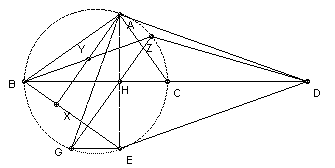
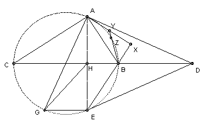

ABC is a triangle with angle A = 90o. The tangent at A to the circumcircle meets the line BC at D. E is the reflection of A in BC. X is the foot of the perpendicular from A to BE. Y is the midpoint of AX. The line BY meets the circumcircle again at Z. Show that BD is tangent to the circumcircle of ADZ.
Solution
|  |  |
We call the two diagrams case (1) and case (2).
Let AG be a diameter of the circumcircle of ABC and let AE meet BC at H. We show first ∠AZH = 90o. ∠AEG = ∠AXB = 90o. In case (1), ∠AGE = ∠ABE = ∠ABX. In case (2), ∠AGE = 180o - ∠ABE = ∠ABX. So in both cases triangles AGE and ABX are similar. So ∠GAE = ∠BAX and GA/BA = AE/AX = 2AH/2AY = AH/AY. So triangles AGH and ABY are similar. So ∠AGH = ∠ABY. But ∠ABY = ∠ABZ (same angle) = ∠AGZ. So ∠AGH = ∠AGZ and hence G, H, Z are collinear. So ∠AZH = ∠AZG = 90o (since AG is a diameter).
So ∠DHZ = 90o - ∠AHZ = ∠HAZ = ∠EAZ. But DE is the reflection of DA in the line BC, so it is also a tangent to the circumcircle of ABC and hence ∠EAZ = ∠DEZ. So ∠DHZ = ∠DEZ, so DZHE is cyclic. Hence ∠ZDH = ∠ZEH = angle ZEA = ∠DAZ (since DA is tangent). Hence HD is tangent to the circle through ADZ.

© John Scholes
jscholes@kalva.demon.co.uk
30 Aug 2002